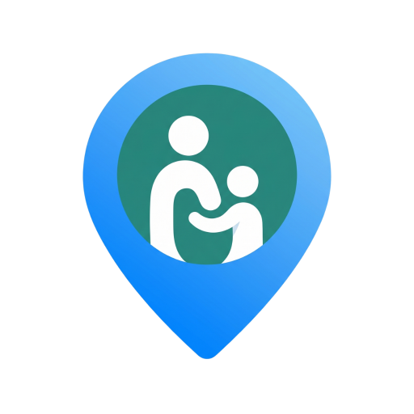

FamilyLink
"Menos espía, más cercanía. Eso es todo."
Escanead y probadla — o seguimos con la demo en vivo 🎬
Gracias por escuchar · ¿Preguntas? · José — TFG DAM 2025/2026

La app para saber dónde está tu familia… sin convertirte en el FBI
TFG · Desarrollo de Aplicaciones Multiplataforma · José
Vamos — flechas, scroll o botones ↓
Imagina Life360… pero sin que tu madre te vigile mientras duermes la siesta
Un toque y compartes. Otro toque y desapareces. Tu móvil no es un grillo 24 horas.
Pausas la ubicación un rato. El grupo lo sabe, pero respetan tu espacio. Máx. 5 veces al día.
Familia, pareja, colegas del piso… quien tú invites. Nadie más.
"Estar conectados sí. Sentirse espiados, no."
Porque las que hay ahora parecen diseñadas por alguien que nunca tuvo familia
La IA no escribió el TFG por mí — pero sí me quitó el trabajo aburrido para que yo pensara en lo importante
Copiar, pegar, rezar. La IA responde bonito… y a veces inventa cosas que no existen. Spoiler: no funciona así en producción.
Uno diseña, otro codea, otro revisa, otro testea. Y Engram recuerda lo que decidimos ayer — porque la IA olvida como un pez.
Inspirado en Gentleman Programming: la IA no piensa por ti, pero si la diriges bien, vuela.
Arquitectura hexagonal + DDD — suena técnico, pero la idea es simple: las reglas del juego en el centro, todo lo demás intercambiable
💡 ¿Por qué? Si mañana cambio de PostgreSQL a otra cosa, no tengo que reescribir media app. El dominio ni se entera.
Cuando pulsas compartir, esto es lo que pasa por detrás (sin magia, con sentido)
async execute(dto: ShareLocationInputDTO) { const userId = UserId.create(dto.userId); const coordinates = Coordinates.create(dto.latitude, dto.longitude); if (user.isPrivacyModeActive()) { throw AppError.forbidden('Cannot share while privacy mode active'); } // Evalúa geocercas: ¿entró o salió de una zona? const transitions = this.zoneEvaluationService .evaluateTransitions(prevCoords, coordinates, zones); for (const t of transitions) { await this.eventPublisher.publish( t.type === 'entered' ? new ZoneEntered(...) : new ZoneExited(...) ); } await this.locationCache.set(userId, coordinates); // Redis await this.eventPublisher.publish(new LocationShared(...)); }
Tocas el mapa, marcas el centro de la zona y ajustas el radio — la app detecta entradas y salidas sin preguntar cada cinco minutos
// Ray-casting: impar = dentro, par = fuera private raycast(lat, lng, vertices) { let inside = false; for (let i = 0, j = n - 1; i < n; j = i++) { if ((vi.lat > lat) !== (vj.lat > lat) && lng < ((vj.lng - vi.lng) * (lat - vi.lat)) / (vj.lat - vi.lat) + vi.lng) inside = !inside; } return inside; } // Transiciones: compara zona anterior vs nueva posición evaluateTransitions(prev, current, zones) → ZoneEntered | ZoneExited
Si alguien manda #ZZZZZZ como color, el sistema lo rechaza antes de llegar a la base de datos
static create(hex: string): ColorHex { const trimmed = hex.trim().toUpperCase(); if (!/^#[0-9A-F]{6}$/.test(trimmed)) throw new Error('Invalid color hex'); return new ColorHex(trimmed); }
Paleta estilo Apple — porque "Casa" en rojo y "Gym" en naranja se entiende a la primera:
Sin refrescar la página como en 2010 — cuando tu hermano comparte, lo ves al momento
const socket = io(API_URL, { path: '/ws', auth: { token } }); socket.on('connect', () => socket.emit('join:circle', circleId)); socket.on('location:updated', (data) => { updateMemberLocation(data.userId, data.coordinates.lat, data.coordinates.lng); }); socket.on('privacy:activated', (data) => { // El avatar desaparece del mapa para los demás setMembers(members.map(m => m.userId === data.userId ? { ...m, isPrivacyModeActive: true } : m)); });
Sueño a futuro: avatares estilo Animal Crossing o Los Sims — que ver a tu gente sea bonito, no un punto azul aburrido
🚀 Hoy: círculos con foto y estado. Mañana: tu madre como un osito caminando hacia "Casa". Lo sé, suena ridículo. Por eso mola.
Porque no es lo mismo ir al médico que quedar con amigos — y tu familia no necesita saberlo todo
Un toque y tu gente te ve. Sin dejar el GPS encendido toda la tarde.
Pausas tu ubicación 15 min–8 h. El grupo lo ve, pero respeta. Máx. 5 activaciones al día.
No es lo mismo: desapareces del mapa y nadie recibe aviso. Silencio total. Úsalo con cabeza.
Un botón para callar a tu madre antes de que te llame tres veces.
Puntito verde = está en la app ahora mismo. Como WhatsApp, pero en el mapa.
"En el gym", "De camino", "No me hables"… lo que necesites.
Alguien tiene que ser el adulto responsable del grupo. Spoiler: normalmente es mamá.
Cuatro estilos para elegir — de día, de noche, satélite o minimalista
Porque a veces quieres ver la ciudad en volumen
Sabes si tu hermano está bajo el sol o bajo la tormenta
Dónde ha estado tu gente últimamente — estilo stories
Geocercas circulares: un toque en el mapa, eliges radio y color — la app avisa sola
Colocas el centro con un toque (en móvil no se dibuja a mano alzada — arrastrar mueve el mapa)
Para distinguirlas de un vistazo
"Ha llegado a Casa" — sin que nadie escriba nada
Hasta 20 zonas por grupo. Ajustas el radio con un slider — de 50 m a lo que necesites.
Sin cambiar de app para preguntar "¿dónde estás?" y mandar un GIF de un gato
Porque a veces un GIF vale más que mil coordenadas
"Mira dónde estoy" con imagen incluida
"¿Pizza o hamburguesa?" — democracia familiar
Que cada círculo tenga su vibe
Retos diarios, medallas y rachas — un poco de juego para que la familia participe de verdad
Comparte ubicación 3 veces
Envía 5 mensajes — ¡Completado!
Activa modo fantasma 1 vez
Presume de medallas en tu perfil. Sí, tu madre también competirá.
No es magia — es saber qué usar y cuándo. Esto es lo que me acompañó en el TFG
La memoria que la IA no tiene. Recuerda decisiones de ayer para no repetir errores hoy.
El "enchufe" que conecta la IA con el mundo real: archivos, terminal, memoria…
Manuales que solo se abren cuando hacen falta. Menos ruido, más foco.
Uno diseña, otro programa, otro revisa, otro testea. Yo hago de director.
"La IA no va a quitarnos el trabajo, pero alguien que sepa usarla bien le va a quitar el trabajo a quien solo copie y pegue sin entender. El futuro no es picar código a ciegas — es dirigir, revisar y pensar."
"Funciona en mi máquina" y a correr. Hasta que no funciona. Y nadie sabe por qué.
Entiende el porqué, delega el cómo, revisa el resultado. Ese soy yo intentando ser.
FamilyLink es un proyecto vivo — esto es lo que tengo en la cabeza para cuando termine el curso
La puedes probar. De verdad. No es un mockup de Figma.
Que tu madre la descargue sin pasar por "instalar APK raro del hijo"
Personajes caminando por el mapa, con ropa, emotes y todo. Porque un punto azul da pena.
"Llegué bien" en la muñeca. Live Activities. La familia Apple completa.
"Papá suele llegar a las 18:00 y hoy no ha llegado" — sin que nadie programe nada a mano.
"Menos espía, más cercanía. Eso es todo."
Escanead y probadla — o seguimos con la demo en vivo 🎬
Gracias por escuchar · ¿Preguntas? · José — TFG DAM 2025/2026